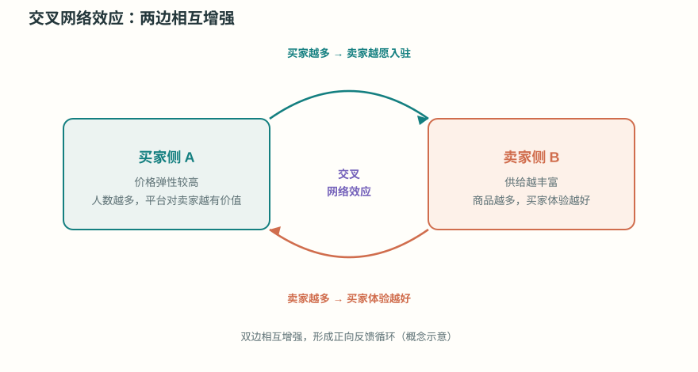
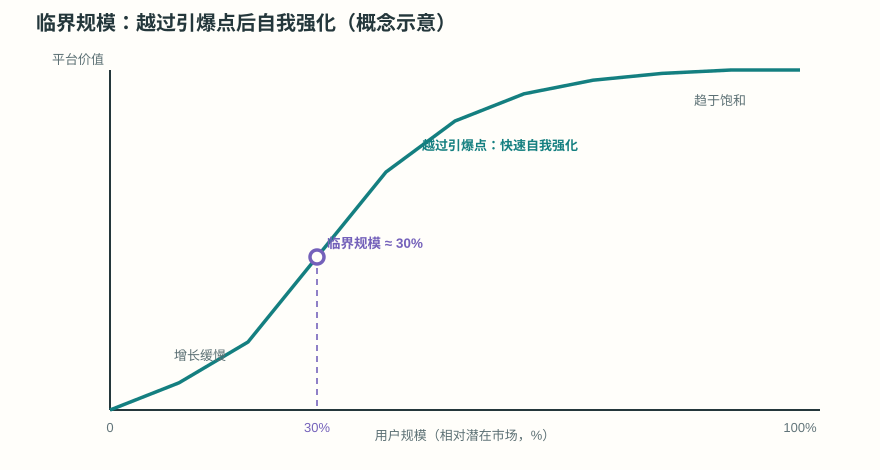

CHAPTER 26 · MICROECONOMICS
平台经济与双边市场
平台同时连接两个相互依赖的用户群体，价格不再由单条供需曲线决定。本章用交叉网络效应解释“补贴一边、向另一边收费”，并说明临界规模与监管边界。
为什么一边免费
电商平台向商家收广告费与佣金，却向买家免费；打车平台对乘客发优惠券，却对司机抽成。如果价格由供给和需求同时决定，这种“只收一边”的做法看起来不合常理。
本章的问题是：当平台连接两个不同的用户群体时，价格该如何分配？答案需要一个新的概念——交叉网络效应，它使平台要面对两条相互依赖的需求，而不是一条。
双边市场与网络效应
传统企业卖产品，价格针对单个顾客；平台不生产产品，它生产的是连接。双边市场 two-sided market指一个平台连接两个相互依赖的用户群体（如买家与卖家），并从这种连接中创造价值。
关键在于交叉网络效应 cross-side network effects：一边的用户数量直接影响另一边的效用。买家越多，卖家越愿入驻；卖家越多，买家的选择越丰富。于是平台面对的是两条相互依赖的需求，而不是一条。

网络效应分两种：直接网络效应指同一边用户增加提高该边价值（聊天软件：好友越多越有用）；间接（交叉）网络效应指一边增加提高另一边价值（电商：买家越多，卖家越愿入驻）。
跷跷板定价：向谁收费
平台常对一边免费甚至补贴，而对另一边收费，这被称为跷跷板原理 see-saw principle：平台需要在两边之间分配价格。一个常用的简化规则是：对价格弹性较大的一边定低价，对弹性较小的一边定高价；若一边对另一边有很强的正向网络效应，还应进一步降低其价格以做大整个池子。
这只是直觉层面的近似：真实的最优定价还要看两边的边际成本与交叉外部性的强度，不能用它直接算出具体费率。它解释的是方向：弹性大的一边更便宜。
| 平台类型 | 补贴（低/免费）边 | 主要收费边 | 机制 |
|---|---|---|---|
| 出行平台 | 乘客（对价格敏感） | 司机（对订单量敏感） | 保证响应时间，做大双边规模 |
| 电商平台 | 买家（免费浏览） | 卖家（广告与佣金） | 买家规模决定卖家入驻意愿 |
| 社交/内容 | 普通用户（免费） | 广告主与开发者 | 用户规模是生态基础 |
平台对两边收取不同价格，并不等于“剥削”某一方——它的目标是最大化整个平台的交易量与价值。这一点与单边市场的价格歧视不同，需要结合两边的弹性与网络效应一起看。
交互实验：在两边之间分配价格
跷跷板定价
设总价格 T=12 在买家（A）与卖家（B）之间分配，P_A=s、P_B=12−s。两边参与量由价格与交叉网络效应共同决定。拖动滑块改变 P_A，观察参与量与平台利润。
P_A=4，P_B=8：买方参与 N_A≈42.6，卖方参与 N_B≈8.8，平台利润≈240.9。利润最高的分配：P_A≈8.00、P_B≈4.00，利润≈399.1。
参与量由线性系统解出：N_A=60−5P_A+0.3N_B，N_B=60−8P_B+0.3N_A；参数为教学示例，非平台实测数据。
如果把弹性更大的卖家边价格降到 0、把买方价格升到 12，平台利润会更高吗？为什么？
查看答案
不会。价格分配存在内部最优：把全部价格压到一边虽能抬高一方参与，却会让另一方参与下降，交叉网络效应也随之减弱。实验中利润曲线在中间某一点达到最高，说明平台需要在弹性与交叉效应之间平衡。
冷启动与赢者通吃
网络效应要增长到一定程度才显现，而起步时两边的用户都在等对方先动，这就是冷启动问题 cold-start problem。平台价值随用户规模的变化往往呈 S 型：早期增长缓慢，越过临界规模 critical mass 后自我强化、快速增长，最后趋于饱和。

常见的破局思路（均为概念性描述）：先在一边集中资源达到规模，再吸引另一边；用单边工具培养习惯，逐步长成平台；或对某一时期的一边给予补贴。关键认识是不要同时把资源平均花在两边——在任一边都未达到临界规模时，平均用力反而难以形成正反馈。
一旦某一平台在两边都跨过临界规模，后来者即使产品更好也难撼动其网络效应优势，这造成赢者通吃 winner-take-most的倾斜格局。但“赢者通吃”是趋势而非定律：多归属（用户同时使用多个平台）与差异化定位能给后来者留下空间。
平台监管与边界
平台的成功带来了监管难题。传统反垄断分析针对单边市场，而平台常同时经营多个业务、双向定价。
- 市场如何界定：一个平台可能既是社交网络、又是支付工具，不同界定会得出完全不同的市场份额。
- 高利润不等于垄断：平台的高利润也可能来自持续创新与网络效应，不能直接套用“高价即垄断”的逻辑。
- 数据作为进入壁垒：积累的海量数据本身就可能成为后来者难以跨越的门槛，因为推荐与匹配算法依赖数据规模。
监管工具正在演化。欧盟《数字市场法案 Digital Markets Act》为被认定为“守门人”的平台设定了一系列义务（如不得将自营产品排名优于第三方、必须允许数据迁移）；中国近年来也出台平台经济反垄断与数据、算法相关法规，禁止“二选一”等排他行为。这些规则仍在探索中，需要在保持创新活力和维护竞争之间取得平衡。
引用文献与适用范围
本章的参与量与价格公式（N_A=60−5P_A+0.3N_B、N_B=60−8P_B+0.3N_A，T=12）均为教学示例，不是任何具体平台的实测数据；机制性概念参考如下。
- OpenStax · Principles of Microeconomics 3e（含市场势力与网络相关内容）
- Rochet, J.-C. & Tirole, J. (2003). Platform Competition in Two-Sided Markets. Journal of the European Economic Association, 1(4), 990–1029.（交叉网络效应与平台定价）
- Shapiro, C. & Varian, H. (1999). Information Rules. Harvard Business School Press.（临界规模与网络经济）
具体平台的费率与策略会变动，本章不引用未公开的费率数字；监管制度以官方文本为准，本节仅作概述。